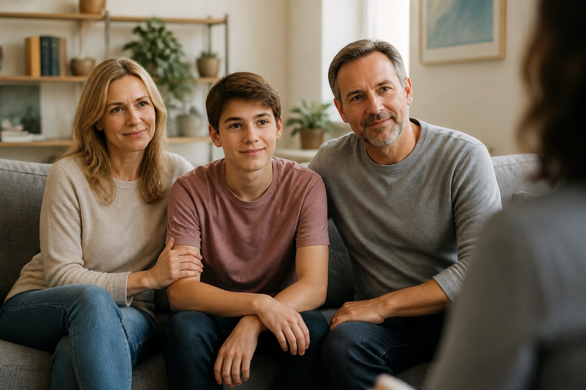

FAMILY INVOLVEMENT
We encourage family participation in the recovery process through family education, communication training, and therapeutic support. Families are partners in healing.
SERENITY RANCH
Because recovery happens together.
First responders don't just respond to calls - they carry them home. The job affects the entire family system. At Serenity Ranch, we believe healing and recovery must include those who stand beside you.
We encourage family participation in the recovery process through family education, communication training, and therapeutic support. Families are partners in healing.
Guided family therapy sessions help improve communication, restore connection, and address the impact of trauma, stress, and substance use on relationships.

Families receive education about trauma, recovery, stress management, and healthy boundaries - empowering them with knowledge and practical tools.
Our goal is to help families rebuild trust, strengthen relationships, and create a foundation of support for long-term recovery and wellness.
When families heal, everyone moves forward. We are here to support you and the people who matter most.